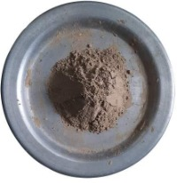

№ 01

Zn · 70%
Zinc Ash Powder 70%
Zinc-rich ash in bulk, supplied for zinc recovery and zinc-chemical manufacture.
- Zinc content
- 70%
- Used in
- Zinc recovery · Zinc chemicals
- Order
- Bulk lots